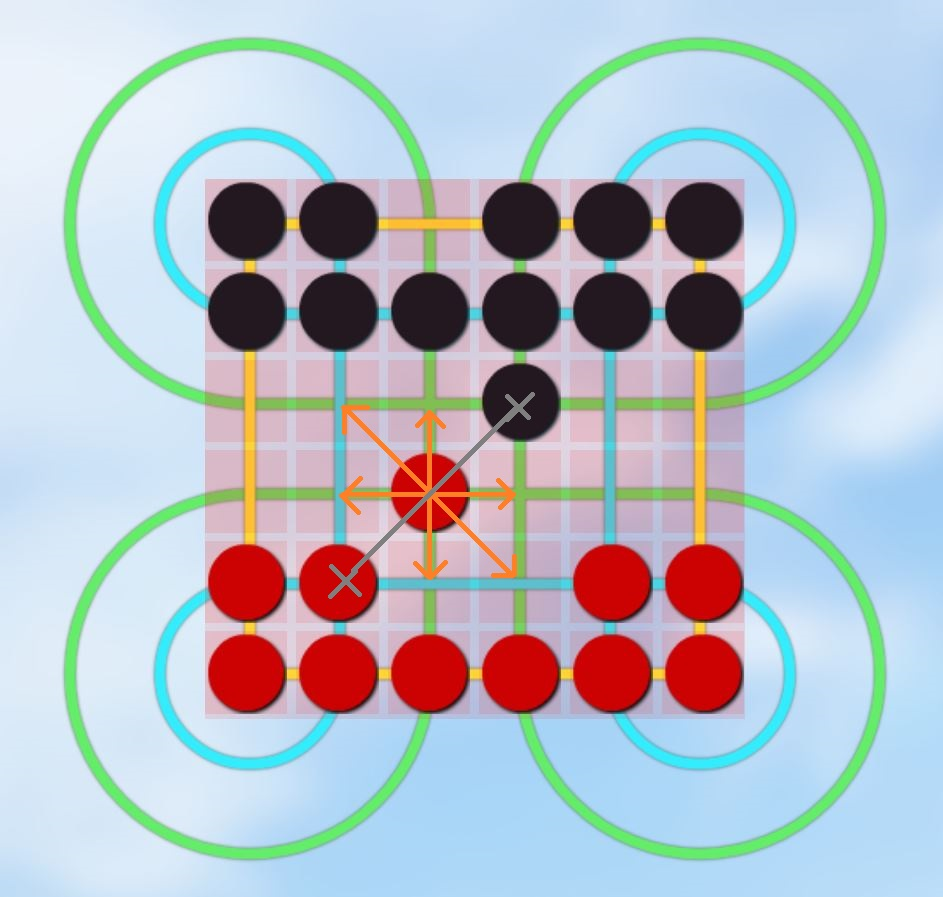

Surakarta Chess
How to play?
Move your red chessmen to capture as many black chessmen (controlled by programme) as possible and avoid be captured till the game ends.
In each turn, you can move any of your chessman on the board to any cross of lines. There are two ways to move, normal move and capturing move.
The game ends when one side has no chessman or someone asks for ending the game.
How to do normal move?
As the picture shown above, you can move any chessman in your turn.
One chessman can move to any unoccupied box of totally 8 directions around it.
Note that normal move cannot capture any opposite chessman.
How to do capturing move?
A capturing move consists of traversing along an inner or outer circuit (colored blue or green in the illustration) around at least one of the eight corner loops of the board, followed by landing on an enemy piece, capturing it. Captured pieces are removed from the game.

As the picture shown above, for the star-marked red chessman, you can move this one to capture the black chessman marked with a cross in your turn.
Note that only capturing move can remove enemy's chessman.
Online Game Rules
In each of your turn, you have 30 seconds to move. If the time out, the turn will be changed to the competitor. If anyone logout or close the browser which means offline, after 50 seconds' detection, the offline player will be losing.